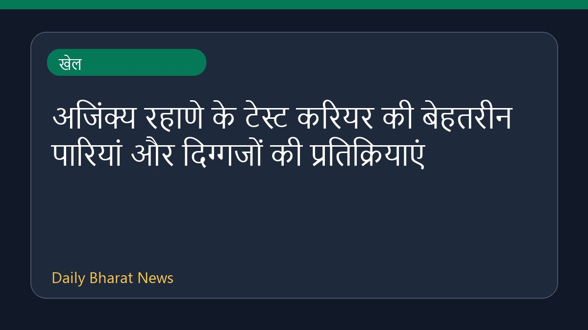

अजिंक्य रहाणे के टेस्ट करियर की बेहतरीन पारियां और दिग्गजों की प्रतिक्रियाएं

क्रिकइन्फो और अन्य खेल समाचारों के अनुसार, अजिंक्य रहाणे के विशिष्ट अंतरराष्ट्रीय टेस्ट करियर पर चर्चा की गई है। बीसीसीआई ने उनके योगदान को याद किया है। कप्तान रोहित शर्मा ने उनके साथ लंबे समय तक ड्रेसिंग रूम साझा करने पर एक भावुक संदेश लिखा है। इसके अलावा, प्रवीण आमरे ने उन्हें एक शांत योद्धा बताया है, जो हमेशा टीम के लिए तैयार रहते थे। क्रिकेट जगत के विभिन्न दिग्गजों ने उनके करियर और मेलबर्न से लेकर दिल्ली तक की उनकी शानदार पारियों को याद करते हुए उन्हें श्रद्धांजलि दी है।
मूल स्रोत: Sports News Sources
Melbourne magic to Delhi double - Rahane's greatest hits in Tests - Cricinfo ↗
Melbourne magic to Delhi double - Rahane's greatest hits in Tests - Cricinfo ↗